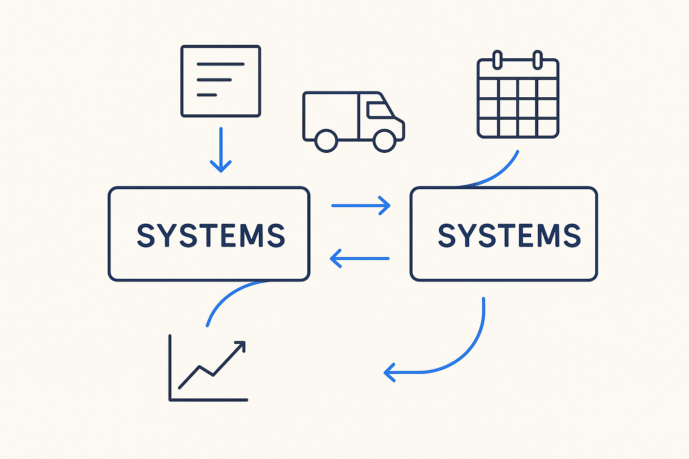

Systems exchange metadata automatically — updates on structure changes, expected deliveries, delivery calendars, and the quality results of the data one system hands another.

> Systems exchange metadata automatically — updates on structure changes, expected deliveries, delivery calendars, and the quality results of the data one system hands another.
The hand-off between systems shouldn’t depend on a human relaying news. When systems talk to each other in metadata, a change announces itself: the producer publishes a structure change, the expected deliveries, the calendar, and the quality results of what it is sending — the outcomes of its own data-quality and plausibility checks — and the consumer receives that update automatically. The boundary between two systems becomes a live, machine-readable conversation instead of a support ticket.
The payoff is that surprises turn into notifications. A schema change upstream arrives as a metadata update, not as a broken load discovered at 3 a.m.; a quality dip in a delivery is reported by the provider, not reconstructed by the receiver. Each system knows what to expect and is told when the expectation shifts, so the whole chain can adapt in time instead of after the fact.
This is the interface that makes contracts, deliveries and calendars operational: they are only enforceable if the two sides actually exchange the metadata that describes them. Systems-talk-to-systems is continuous metadata integration applied across organizational and platform boundaries — the metadata flows so the data can be trusted.
Where it lives: the delivery layer of Breakthrough Modeling — the boundary as a metadata conversation.